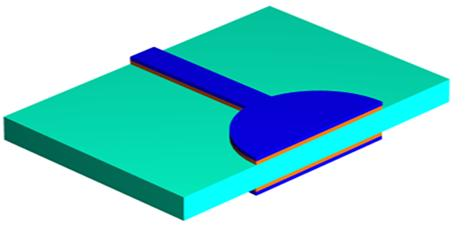

印制电路板{PCB线路板}，又称印刷电路板，是电子元器件电气连接的提供者。
参考链接：http://mouser.eetrend.com/content/2018/100015548.html
http://www.360doc.com/content/16/0529/15/33072037_563261798.shtml
https://wenku.baidu.com/view/e809f110cc7931b765ce1577.html
PCB电路板的组成
1、线路与图面（Pattern）：线路是做为原件之间导通的工具，在设计上会另外设计大铜面作为接地及电源层。线路与图面是同时做出的。
2、介电层（Dielectric）：用来保持线路及各层之间的绝缘性，俗称为基材。
3、孔（Through hole / via）：导通孔可使两层次以上的线路彼此导通，较大的导通孔则做为零件插件用，另外有非导通孔（nPTH）通常用来作为表面贴装定位，组装时固定螺丝用。
4、防焊油墨（Solder resistant /Solder Mask） ：并非全部的铜面都要吃锡上零件，因此非吃锡的区域，会印一层隔绝铜面吃锡的物质（通常为环氧树脂），避免非吃锡的线路间短路。根据不同的工艺，分为绿油、红油、蓝油。
5、丝印（Legend /Marking/Silk screen）：此为非必要之构成，主要的功能是在电路板上标注各零件的名称、位置框，方便组装后维修及辨识用。
6、表面处理（Surface Finish）：由于铜面在一般环境中，很容易氧化，导致无法上锡（焊锡性不良），因此会在要吃锡的铜面上进行保护。保护的方式有喷锡（HASL），化金（ENIG），化银（Immersion Silver），化锡（Immersion TIn），有机保焊剂（OSP），方法各有优缺点，统称为表面处理。
PCB制作工艺
1.化学清洗—【Chemical Clean】
为得到良好质量的蚀刻图形，就要确保抗蚀层与基板表面牢固的结合，要求基板表面无氧化层、油污、灰尘、指印以及其他的污物。因此在涂布抗蚀层前首先要对板进行表面清洗并使铜箔表面达到一定的粗化层度。
内层板材：开始做四层板，内层（第二层和第三层）是必须先做的。内层板材是由玻璃纤维和环氧树脂基复合在上下表面的铜薄板。
2.裁板 压膜—【Cut Sheet Dry Film Lamination】
涂光刻胶：为了在内层板材作出我们需要的形状，我们首先在内层板材上贴上干膜（光刻胶，光致抗蚀剂）。干膜是由聚酯簿膜，光致抗蚀膜及聚乙烯保护膜三部分组成的。贴膜时，先从干膜上剥下聚乙烯保护膜，然后在加热加压的条件下将干膜粘贴在铜面上。
3.曝光和显影-【Image Expose】 【Image Develop】
曝光：在紫外光的照射下，光引发剂吸收了光能分解成游离基，游离基再引发光聚合单体产生聚合交联反应，反应后形成不溶于稀碱溶液的高分子结构。聚合反应还要持续一段时间，为保证工艺的稳定性，曝光后不要立即撕去聚酯膜，应停留15分钟以上，以时聚合反应继续进行，显影前撕去聚酯膜。
显影：感光膜中未曝光部分的活性基团与稀碱溶液反应生产可溶性物质而溶解下来，留下已感光交联固化的图形部分。
4.蚀刻-【Copper Etch】

在挠性印制板或印制板的生产过程中，以化学反应方法将不要部分的铜箔予以去除，使之形成所需的回路图形，光刻胶下方的铜是被保留下来不受蚀刻的影响的。
5.去膜，蚀后冲孔，AOI检查，氧化
Strip Resist】 【Post Etch Punch】 【AOI Inspection】 【Oxide】
去膜的目的是清除蚀刻后板面留存的抗蚀层使下面的铜箔暴露出来。“膜渣”过滤以及废液回收则须妥善处理。如果去膜后的水洗能完全清洗干净，则可以考虑不做酸洗。板面清洗后最后要完全干燥，避免水份残留。
6.叠板-保护膜胶片【Layup with prepreg】
进压合机之前,需将各多层板使用原料准备好,以便叠板(Lay-up)作业.除已氧化处理之内层外,尚需保护膜胶片(Prepreg)-环氧树脂浸渍玻璃纤维。叠片的作用是按一定的次序将覆有保护膜的板子叠放以来并置于二层钢板之间。
7.叠板-铜箔 和真空层压
【Layup with copper foil】【Vacuum Lamination Press】
铜箔-给目前的内层板材再在两侧都覆盖一层铜箔，然后进行多层加压（在固定的时间内需要测量温度和压力的挤压）完成后冷却到室温，剩下的就是一个多层合在一起的板材了。
8.CNC钻孔【CNC Drill】
在内层精确的条件下，数控钻孔根据模式钻孔。钻孔精度要求很高，以确保孔是在正确位置。
9.电镀-通孔【Electroless Copper】
为了使通孔能在各层之间导通（使孔壁上之非导体部份之树脂及玻纤束进行金属化），在孔中必须填充铜。第一步是在孔中镀薄薄一层铜，这个过程完全是化学反应。最终镀的铜厚为50英寸的百万分之一。
10.裁板 压膜【Cut Sheet】 【Dry Film Lamination】
涂光刻胶：我们有一次在外层涂光刻胶。
11.曝光和显影-【Image Expose】 【Image Develop】
外层曝光和显影
12.线路电镀：【Copper Pattern Electro Plating】
此次也成为二次镀铜，主要目的是加厚线路铜和通孔铜厚。
13.电镀锡【Tin Pattern Electro Plating】
其主要目的是蚀刻阻剂, 保护其所覆盖的铜导体不会在碱性蚀铜时受到攻击（保护所有铜线路和通孔内部）。
14.去膜【Strip Resist】
我们已经知道了目的，只需要用化学方法，表面的铜被暴露出来。
15.蚀刻【Copper Etch】
我们知道了蚀刻的目的，镀锡部分保护了下面的铜箔。
16.预硬化 曝光 显影 上阻焊
【LPI coating side 1】 【Tack Dry】 【LPI coating side 2】【Tack Dry】
【Image Expose】【Image Develop】 【Thermal Cure Soldermask】
阻焊层,是为了把焊盘露出来用的,也就是通常说的绿油层,实际上就是在绿油层上挖孔,把焊盘等不需要绿油盖住的地方露出来。适当清洗可以得到合适的表面特征。
17.表面处理
【Surface finish】
> HASL, Silver, OSP, ENIG 热风整平，沉银，有机保焊剂，化学镍金
> Tab Gold if any 金手指
热风整平焊料涂覆ＨＡＬ(俗称喷锡)过程是先把印制板上浸上助焊剂，随后在熔融焊料里浸涂，然后从两片风刀之间通过，用风刀中的热压缩空气把印制板上的多余焊料吹掉，同时排除金属孔内的多余焊料，从而得到一个光亮、平整、均匀的焊料涂层。
金手指(Gold Finger,或称 Edge Connector)设计的目的,在于藉由connector连接器的插接作为板对外连络的出口,因此须要金手指制程.之所以选择金是因为它优越的导电度及抗氧化性.但因为金的成本极高所以只应用于金手指,局部镀或化学金
最后总结一下所有的过程：
Inner Layer 内层
> Chemical Clean 化学清洗
> Cut Sheet Dry Film Lamination 裁板 压膜
> Image Expose 曝光
> Image Develop 显影
> Copper Etch 蚀铜
> Strip Resist 去膜
> Post Etch Punch 蚀后冲孔
> AOI Inspection AOI 检查
> Oxide 氧化
> Layup 叠板
> Vacuum Lamination Press 压合CNC Drilling 钻孔
> CNC Drilling 钻孔Outer Layer 外层
> Deburr 去毛刺
> Etch back - Desmear 除胶渣
> Electroless Copper 电镀-通孔
> Cut Sheet Dry Film Lamination 裁板 压膜
> Image Expose 曝光
> Image Develop 显影Plating 电镀
> Image Develop 显影
> Copper Pattern Electro Plating 二次镀铜
> Tin Pattern Electro Plating 镀锡
> Strip Resist 去膜
> Copper Etch 蚀铜
> Strip Tin 剥锡Solder Mask 阻焊
> Surface prep 前处理
> LPI coating side 1 印刷
> Tack Dry 预硬化
> LPI coating side 2 印刷
> Tack Dry 预硬化
> Image Expose 曝光
> Image Develop 显影
> Thermal Cure Soldermask 印阻焊Surface finish 表面处理
> HASL, Silver, OSP, ENIG 热风整平，沉银，有机保焊剂，化学镍金
> Tab Gold if any 金手指
> Legend 图例Profile 成型
> NC Routing or punchET Testing, continuity and isolation
QC Inspection
> Ionics 离子残余量测试
> 100% Visual Inspection 目检
> Audit Sample Mechanical Inspection
> Pack & Shipping 包装及出货